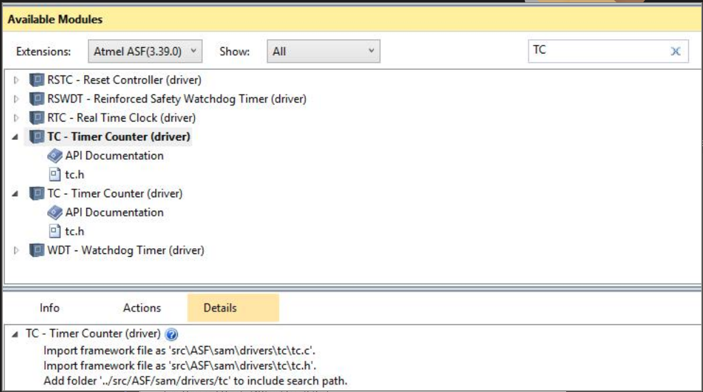

TC - RTC - RTT¶
Neste laboratório iremos trabalhar com os periféricos de contagem de tempo do nosso microcontrolador.
| Pasta |
|---|
Lab4-TC-RTC-RTT |
Os periféricos trazidos neste laboratório são:
- Real Time Clock - RTC
- Timer Counter - TC
- Real Time Timer - RTT
O laboratório é formado por duas partes:
-
Parte 1 (mínimo):
- Entender os exemplos (TC/RTT/RTC)
- Incorporar todos os exemplos em um único projeto
- Pisca pisca
-
Parte 2:
- C+: fazer outro LED piscar com TC
- B : Exibir a hora atual no OLED
- A : Usar IRQ do segundos do RTC
Exemplos¶
SAME70-examples
Antes de continuar atualize o repositório de exemplos ele pode ter tido melhorias.
Nesse lab iremos trabalhar com três periféricos que lidam com 'tempo', o TimerCounter - TC (temos no total de quatro unidades TC (TC0 ~ TC3) e cada uma pode lidar com três contagens, totalizando 12) o Real-time Timer - RTT (temos uma) e o Real-time Clock RTC (temos uma). Cada um possui sua especifidade:
- TC: Faz várias coisas, neste lab iremos usar para gerar interrupções maiores que 2Hz (ele não consegue gerar tempos muito lentos!)
- RTT: É um contador que consegue gerar praticamente qualquer frequência (vamos usar para gerar frequências lentas)
- RTC: É um como um calendário com relógio, ele conta anos, meses, dias, horas, minutos e segundos.
Cada periférico está em um exemplo diferente:
| Periférico exemplos |
|---|
Perifericos/TC-IRQ |
Perifericos/RTT-IRQ |
Perifericos/RTC-IRQ |
Cada exemplo possui o seu próprio README que explica de forma ampla os periféricos. Note que todos esses exemplos estão operando por interrupção! Onde cada periférico possui o seu handler para resolver a interrupção.
Tarefa
Para cada exemplo (TC,RTT e RTC):
- Leia o README
- Programe a placa (e veja os LEDs piscando!)
- Entenda o código
Lab¶
O lab faz uso da placa OLED1 e de um código exemplo. Para começar você deve copiar o código exemplo: SAME70-examples/Screens/OLED-Xplained-Pro-SPI/ para a pasta da entrega do seu repositório Lab4-TC-RTC-RTT.
C: TC, RTT e RTC¶
Com o código do OLED1 copiado, vocês devem configurar os botões e os LEDs da placa OLED e então utilizando os periféricos fazer:
- Que o
LED1pisque na frequência de 4Hz, para isso utilize o TC; - Fazer com que o
LED2pisque a uma frequência de 0.25Hz, para isso utilize o RTT; - Piscar o
LED3depois de 20 segundos do botão 1 da placa OLED ter sido pressionado, para isso utilize o alarme do RTC.
Fazer o uC entrar em sleepmode sempre que não tiver nada para fazer.
Tarefa
No código do OLED1:
- Configurar os pinos e os LEDs da placa OLED1
- Fazer com que o
LED1pisque a 4Hz usando o TC - Fazer com que o
LED2inverta seu estado a cada 4s usando o RTT - Fazer com o que o
LED3inicie apagado e pisque uma vez após 20 segundos do botão 1 ter sido pressionado, use o RTC. - Entrar em sleepmode sempre que possível
Tip
Abrir o código atual e o exemplo e ir trazendo as funções e defines que precisa usar, não esqueça de chamar as funções no main
Tip
Você vai precisar incluir no ASF WIZARD os drivers do TC, RTT e RTT
O TC já foi adicionado no código exemplo (OLED-Xplained-Pro-SPI), não adicone o outro que vai dar problema!!!!

Tip
O RTC tem uma função que você consegue buscar no periférico a hora atual: rtc_get_time(), você pode então configurar um alarme para daqui 20s.
- Leia a função e entenda os seus parâmetros!!
C+: Piscar mais um LED¶
Tarefa
Faça o LED da placa piscar a 5Hz usando um novo TC.
B: Exibindo HH:MM:SS¶
Tarefa
Exiba a hora no formato (HH:MM:SS) no display OLED
Tip
Para executar isso você deverá ser capaz de saber quando que o segundo mudou, duas são as opções:
- Usar um novo TC configurado com 1hz
- Pedir para o RTC gerar uma IRQ a cada mudança de segunda
A segunda opção você faz modificando a função de init_rtc:
RTC_init(RTC, ID_RTC, rtc_initial, RTC_IER_ALREN | RTC_IER_SECEN);
E agora você consegue dentro do RTC_handler saber quando você entrou
na IRQ pelo segundo:
/* Verifica por qual motivo entrou
* na interrupcao, se foi por segundo
* ou Alarm
*/
if ((ul_status & RTC_SR_SEC) == RTC_SR_SEC) {
//
// Entrou por segundo!
//
rtc_clear_status(RTC, RTC_SCCR_SECCLR);
}
Warning
Você nunca deve atualizar display dentro de interrupção (handler)! Sempre no main.
A: Melhorando¶
Quando o botão 1 da placa OLED for pressionado, após 20 segundos, faça o LED 3 piscar com um novo TC.
Preencher ao finalizar o lab